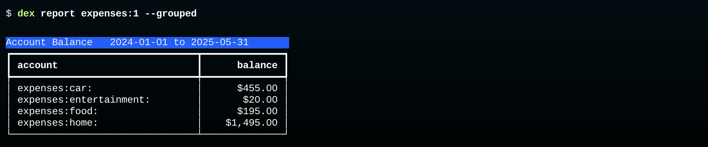
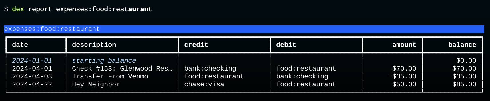
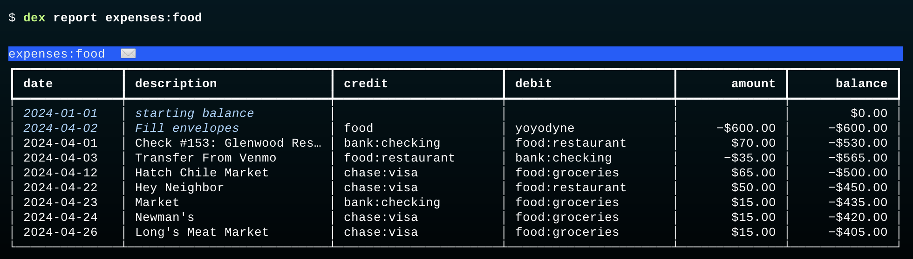
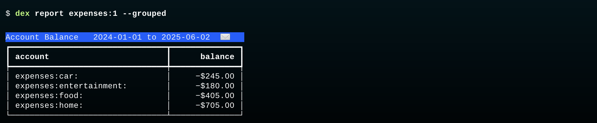
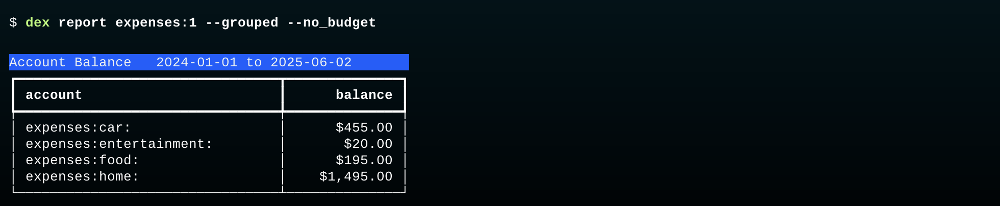

Fill Envelopes
This report shows us how much we spent in each expense category:

The total in each category is the net amount -- the sum of debits (inflows) minus the sum of credits (outflow).
We can see that in detail in the restaurant category:

In this section we are going to add the budget transaction that fills the envelopes for each expense category. What we will see is that the budget transaction changes the meaning of expense account balances: when that transaction is added, the balance is interpreted as "the amount of money left in the envelope" (Envelope Budgeting).
Note: In the current version of Dexter budget transactions are added to the database by an
importcommand. In future versions there will be afillcommand that automates several of the steps described here.
Create the Budget Transaction
Use a text editor to create a new transaction in Journal format.
- The first line should have the transaction date and a brief description (and optionally a comment with extra information).
- The second line should have a posting with the name of an income account that has money we want to distribute to envelopes adn the amount of money we want to distribute
- The remaining lines will have the names of expense accounts and the amount of money we want to put in the envelopes for those accounts.
Here is the transaction to use for the tutorial project. It allocates most of the monthly paycheck from Yoyodyne (which was for $5,000) to the four expense categories:
2024-04-02 Fill envelopes ; Apr budget:
income:yoyodyne $4700.00
expenses:car -$700.00
expenses:entertainment -$200.00
expenses:food -$600.00
expenses:home -$2200.00
That transaction is in a file named fill.apr.journal in the project directory.
Important: Note the transaction has a
budget:tag. The tag is optional, but if it's there Dexter will be able to remove budget transactions from reports (why that's useful is explained below).
Import the Budget Transaction
Type this command to preview what will be imported:
$ dex --pre import fill.apr.journal
None multiple yoyodyne Fill envelopes #budget
Two things are worth noting:
-
the credit column says "multiple", meaning this transaction will credit more than one account (which is true).
-
the last item on the row is
#budget, which is Dexter's syntax for a tag named "budget".
Type the command again to add the transaction to the database:
$ dex import fill.apr.journal
Print Food Expenses
A quick reminder of how Dexter does envelope budgeting (introduced earlier in Envelope Budgeting:
- an envelope is an expense account
- filling the envelope sets a negative balance by crediting the account
- purchases, which debit the account, add a positive amount, moving the balance closer to $0
- if the balance ever gets to $0 it mean the total purchases exceed the original allocation
If you look back at the budget fill transaction, you'll see the posting that fills the food envelope put $600 in the account named expenses:food:
expenses:food -$600.00
That's the parent account for expenses:food:groceries and expenses:food:restaurant.
Any expenses in those two accounts are automatically taken from the food envelope.
This command prints a report for all food transactions, including the envelope filling transaction:

This is just what we expect!
- the envelope was initially empty
- the fill transaction credited the account for $600, setting the balance to -$600
- a purchase on Apr 1 took $70 from the envelope and the balance increased to -$530
- the next transaction put $35 back in the envelope, so the balance is -$536
The remaining transactions all debited the expense account, taking more money from the envelope. At the end of the month the balance was -$405.
This agrees with the summary shown earlier, which said we spent $195 on food. We put in $600, spent $195, and have $405 left.
There is one other difference to note. The title bar of this table has a little envelope icon next to the account name. That's there to indicate the report includes an envelope-filling budget transactions.
Date for the Budget Transaction
You may have noticed the date on the budget fill transaction was April 2. We chose that date because it was the date of the monthly paycheck, so it seemed like a natural time to allocate money to expense categories.
There are other strategies that work just as well, and may even make more sense when there are mulitple income sources or income deposits are made later in the month. This topic is covered in the Fill Date section of the Budget Model documentation.
Print a Summary of All Expenses
This command groups all expenses by the main category (food, car, etc):

The items in the last column show the money left in each envelope at the end of the month.
Ignore Budgets
Adding the budget transaction changed the meaning of "account balance" for expense accounts -- the balance is now the amount left in the envelope (as a negative number).
If you want to print a table that shows the original meaning, namely the total amount spent in that category, it's easy to do -- just tell Dexter to ignore that budget transaction.
Since the budget transaction is tagged #budget the report generator can simply take those out of the calculation.
The --no_budget option tells Dexter to ignore the budget transaction when it prints the summary of all expenses:

That's exactly what we saw at the beginning of this section.